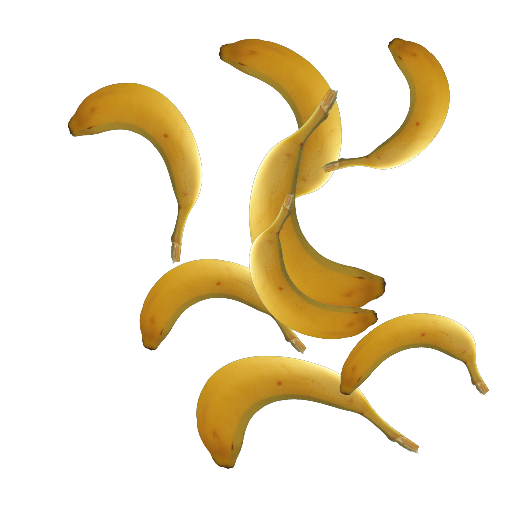

Instance TOP (InstanceTOP)¶
概要¶
入力画像を複製してCHOPで変形して重ねるプラグイン.
使用例: InstanceTOPExample.toe

リファレンス¶
| 項目 | 値 |
|---|---|
| OP Type | Instance |
| ラベル | Instance TOP |
| 種類 | TOP |
| 入力数 | 0 – 16 |
| バージョン | 0.1 |
| 作者 | Shinh0707 |
| Execute mode | CPUMem |
ダウンロード¶
処理時間¶
| ケース | 入力 | Mac Apple M4 Pro |
Windows AMD Ryzen 9 7940HS w/ Radeon 780M Graphics |
|---|---|---|---|
| 100 inst | TOP 1280x720 | 8.59 ms 60→39.6 fps 🔻 |
23.74 ms 60→24.7 fps 🔻 |
cook 1 回の中央値(Release ビルド、TouchDesigner 外での CPU 処理時間)。「60→N fps」は、フレームに余裕の無い 60 fps のプロジェクトに足したときのフレームレート(最悪の場合)。🔻 は 2 fps 以上落ちるケース。計測日: Mac 2026-11-03, Windows 2026-11-03。⚠ はその入力でエラー表示が出たケース。
使用例¶
どれもダウンロードした zip に .toe で入っていて、プラグインと同じフォルダにあればインストールしなくても開けます。ネットワークは InstanceTOP の examples/ にある手順(Python)から自動で作っています。
CHOP で動かすインスタンス¶

入力画像を 8 個描き、Noise CHOP(ランダム)で位置(0〜1、0.5 が中央)・大きさ・回転を与えています。 Position / Scale / Rotation / Index は CHOP を指定するパラメータです。
ネットワーク: in0 (moviefileinTOP) → noise1 (noiseCHOP: channelname=tx ty, startunit=samples, start=0, endunit=samples, end=7, type=random, amp=0.35, offset=0.5) → noise2 (noiseCHOP: channelname=sx sy, startunit=samples, start=0, endunit=samples, end=7, type=random, amp=0.1, offset=0.3, seed=5) → noise3 (noiseCHOP: channelname=r, startunit=samples, start=0, endunit=samples, end=7, type=random, amp=180, seed=9) → plugin (CPlusPlus TOP: Position=noise1, Scale=noise2, Rotation=noise3, Resolution=[512, 512]) → out1
TouchDesigner 099.2025.33230(macOS)で開いて確認済み(2026-11-03)。TD 上の処理時間 1.624 ms — 余裕の無い 60 fps のプロジェクトなら 54.7 fps(-5.3)。
フレームレートへの影響が大きめです
この使用例では 60 fps から 2 fps 以上落ちます。入力の解像度やパラメータに注意してください。
ファイル: InstanceTOPExample.toe
手順(examples/default.py)
"""CHOP で動かすインスタンス
入力画像を 8 個描き、Noise CHOP(ランダム)で位置(0〜1、0.5 が中央)・大きさ・回転を与えています。
Position / Scale / Rotation / Index は CHOP を指定するパラメータです。
"""
def build(ex):
img = ex.input("moviefileinTOP")
pos = ex.source("noiseCHOP", channelname="tx ty", startunit="samples", start=0, endunit="samples", end=7,
type="random", amp=0.35, offset=0.5)
scale = ex.source("noiseCHOP", channelname="sx sy", startunit="samples", start=0, endunit="samples", end=7,
type="random", amp=0.1, offset=0.3, seed=5)
rot = ex.source("noiseCHOP", channelname="r", startunit="samples", start=0, endunit="samples", end=7,
type="random", amp=180, seed=9)
ex.plugin(img, Position=pos, Scale=scale, Rotation=rot, Resolution=(512, 512))
パラメータ: Instance¶
| Name | Label | Type | Default | Range / Menu | Slider |
|---|---|---|---|---|---|
Resolution |
Resolution | WH | (256, 256) | (1, 1) … ∞ | (0, 0) … (1, 1) |
Scale |
Scale | CHOP | |||
Position |
Position | CHOP | |||
Rotation |
Rotation | CHOP | |||
Index |
Index | CHOP |
使い方¶
TODO: 入力・典型的な設定・注意点。